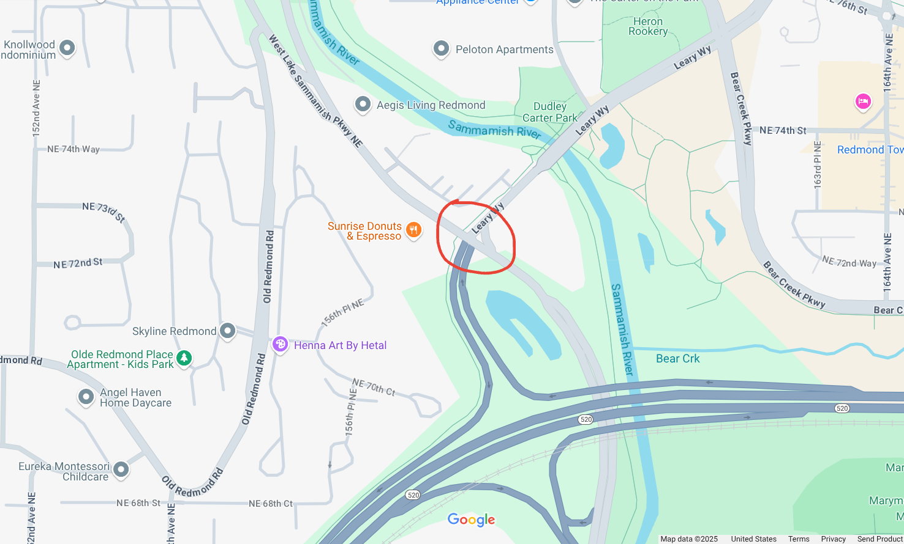

I can think of three off-hand. Two I have been using for years but one I just discovered last month. This got me thinking what one is the best/fastest/most enjoyable? Well I tested all three out on a ride yesterday. I rate them and then I naturally come to a holistic comclusion.
The three routes start and end at the same place. The Bellevue end is
at the intersection of 116 Ave NE and Northrup way, about where eastrail
goes under 520.
The Redmond end is at the dreaded intersection of Leary way, west Sammamish Parkway and the West Redmond entrance/exit ramp of 520. I picked these spots because just about every biker who needs to get between these two downtowns will pass by these intersections 
Here are the three routes
Route 1: SR 520 trail
Distance - 4.9 mi 
Route 2: 116 Ave NE to Old Redmond Road via 132 Ave NE
Distance - 5.6 mi
I like a medium distance, shallow ascent. The descent on Old Redmond
Road is pretty safe, it has a big marked shoulder 
Route 3: SR 520 trail, 156 Ave NE, down 40 St NE, West Lake Sammamish road
Distance - 6.1 mi
I recently discovered this on a group ride, we went up the climb, it was fun
So the last route I actually missed the turn to descend 40 St. NE and went down Tosh road instead. I enjoyed going up and down that descent, but I realized something was not right halfway down the descent. We will use this as route 3 instead for further discussion
The SR 520 trail is a staple in the biking community. Commuters use it alot, but it is not the most enjoyable for road bikers because of the root wedged pavement (they fixed alot since last year at least), the narrow pathway, and the blind corners. It is the shortest route of the three, but because of all the corners and slowing down for roots, the average speed could be slower than other routes.
There are 2 vehicle intersections you have to navigate, but what is nice is since you have to go diagonal through one, there is a light cycle just so bikers can get diagonal through the intersection. I got the green light for both of these intersections on the way to Redmond which really showed in the time. All in all, it gets the job done even though it is really loud from the highway it is attached to.
The 116 Ave route is nice and shady. I really like the initial climb and there is a descent shoulder on the whole route. The Old Redmond Road descent is a good amount of turns. There is 6 signal intersections on the route, two are on the hill and it is kind of weird that the descent is broken up by them. I happened to hit both the red lights just as they were turning red during the ascent of the hill, and that was not enjoyable.
Two of the intersections are at the bottom of the hill right after each other, not at right angles. Going to Bellevue at the start you have to merge three lanes to get into the turning lane while going up a hill, not the best user experience for a car behind you needing to creep at like 7 MPH for you to get through the turn. Then just about immediately once you get through the intersection you need to make another left turn at another busy intersection, not fun. The Old Redmond Road climb is at least a staple in the 7 hills of Kirkland route, so some people like it.
So this one you have to ride on a main road without a shoulder for a couple miles. It is flat so you can keep your speed up pretty well. There is now a bike path on the side of 156 Ave as of a year ago but I dont feel comfortable riding on there going over like 10 MPH, there is a lot of people and slow bikers on the path. The Tosh road descent is fun, I just took the lane. The ascent is a little steep but fun if you want to do a climb. I think the NE 40 st. climb is more fun though.
| Time | route 1 | route 2 | route 3 |
|---|---|---|---|
| Redmond Bound | 20.5 | 22.5 | 25.0 |
| Bellevue Bound | 23.5 | 27.0 | 26.0 |
Each criteria is scored from 1 to 5, the highest sum wins
| criteria | route 1 | route 2 | route 3 |
|---|---|---|---|
| Car Noise | 1 | 4 | 3 |
| Intersections | 4 | 2 | 2 |
| Grade Separation | 4 | 2 | 3 |
| Funnness Redmond Bound | 2 | 4 | 3 |
| Funnness Bellevue Bound | 2 | 2 | 3 |
| Time Redmond Bound | 5 | 3 | 1 |
| Time Bellevue Bound | 5 | 2 | 3 |
| Climb funnness | 3 | 2 | 5 |
| Descent funnness | 2 | 4 | 3 |
| Road surface enjoyability | 1 | 4 | 4 |
| Simpleness | 4 | 4 | 3 |
| Total | 33 | 33 | 33 |
Wow, so based on my ratings, all three routes are the same! This does not mean that they are equal though. I will tell you some of the reasons I will pick one over the other
Pick the SR520 trail if you are in a time crunch and there are not a lot of commuters on bikes or your butt does not hurt from a long ride so you can take the bumps, also you need to be alert so you dont hit other trail users. Other than that, I would probably not use this if I can help it
Pick the 116 route only if going Redmond bound, the other way is not that fun. Take it at rush hour because there is not usually too many cars that conflict with you even if there are a lot of cars on the road, because this route has a lot of right turns
Pick this route if you want a nice long, semi-steep climb, only going Bellevue bound, because if going Redmond bound why dont you just finish up the trail.
I would probably use the 116 route to get to Redmond, and come back the 40 St. NE climb, unless I just want to get somewhere quickly then I would take the SR520 trail